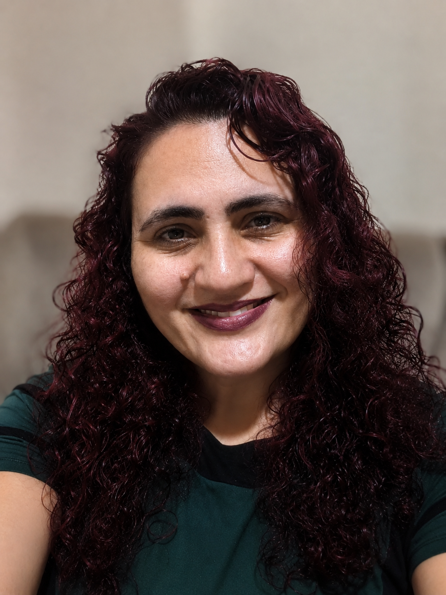

Página de Portfólio
Desenvolvimento de uma página pessoal para apresentar informações profissionais, habilidades e formas de contato.

Olá! Meu nome é Maiara.
Tenho 17 anos de experiência na área de faturamento hospitalar e, há 6 anos, atuo como Supervisora de Faturamento Hospitalar. Atualmente, estou cursando Análise e Desenvolvimento de Sistemas, buscando uma transição de carreira para a área de Tecnologia. Neste momento, tenho direcionado meus estudos ao desenvolvimento web, com foco em Front-End, construindo uma base sólida em HTML, CSS e JavaScript por meio de projetos práticos e aprendizado contínuo.
Acredito que a persistência e a dedicação são essenciais para a evolução profissional. Meu objetivo é unir a experiência adquirida ao longo da minha trajetória aos conhecimentos técnicos que estou desenvolvendo, criando soluções funcionais, organizadas e que proporcionem uma boa experiência ao usuário.
Desenvolvimento de uma página pessoal para apresentar informações profissionais, habilidades e formas de contato.
Desenvolvimento de um sistema para uma pequena biblioteca cadastrar, pesquisar e gerenciar seu acervo.